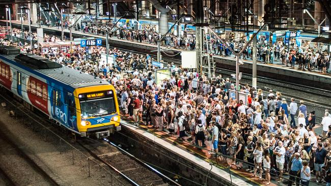
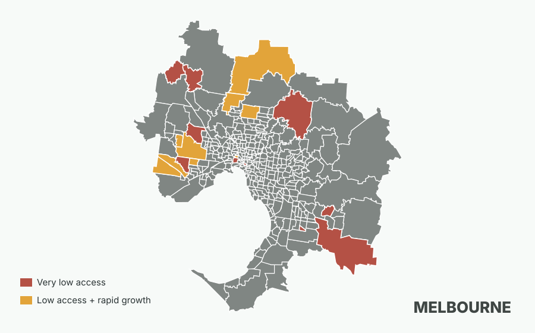

People arrive
Growth corridors add residents quickly, especially around Melbourne's edge.
FIT2179 Data Visualisation 2
Melbourne is growing, but public transport access is not growing evenly with it. This story follows the gap from the map, through the fastest-growing suburbs, and into the transport modes that shape everyday access.
For a growing suburb, a new bus stop can mean more than convenience: it can decide whether a teenager reaches TAFE on time, whether a shift worker needs a second car, and whether growth feels connected or stranded.

Growth corridors add residents quickly, especially around Melbourne's edge.
Some suburbs have very few stops once population size is considered.
When access depends on fewer modes, everyday travel choices become more fragile.
Opening map
The map leads the story because the problem is spatial: weak stop access is clustered, not evenly distributed. Red areas combine rapid growth with low access; gold areas are low-access places that may still become pressure points.

Interactive view
Showing all Greater Melbourne SA2 areas using all public transport stops.
02
In a fast-growing estate, the timetable becomes part of household budgeting. If the nearest useful stop is too far away, a family may keep an older second car running, or a student may turn down a course that starts before the first reliable connection.
03
These are the places where a modest delay can spread through the day: school drop-off, a station car park, a late shift, a missed medical appointment. Low stop access is not abstract when thousands of new residents are arriving at the same time.
04
The growth figures read like a planning success story until transport is added. New homes fill quickly, but everyday access can lag behind, leaving early residents to absorb the awkward years before services catch up.
05
In inner Melbourne, missing one tram may cost a few minutes. On the fringe, missing a bus can cost the next appointment. That is why mode matters: the same number of stops can still mean very different daily freedom.
Takeaway: the outer corridor has many stops, but almost all of them are bus or coach stops, so coverage does not necessarily mean frequent, turn-up-and-go service.
06
The warning area is where two pressures meet: more people and fewer stops per resident. That combination can turn a transport gap into a local news story about traffic, parking, school travel and isolation.
07
The population lines show why this is not a distant planning problem. A suburb that looked manageable in 2021 can feel different by 2025, when the same routes are carrying the routines of many more households.
08
Citywide averages can make the system look calmer than it feels on the ground. The lived experience is local: one suburb may have a workable network, while the next relies on a thinner set of choices.
In inner Melbourne, density and transport choice generally arrive together. In the growth corridors, the picture is more fragile: many residents depend on a bus-heavy network, and some rapidly growing SA2 areas sit near the bottom of the stop-access ranking. The next version of this project should add service frequency so that the story moves from "how many stops exist?" to "how useful are those stops during the day?"